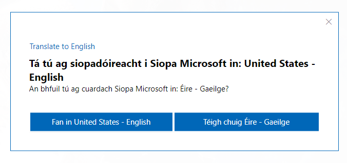
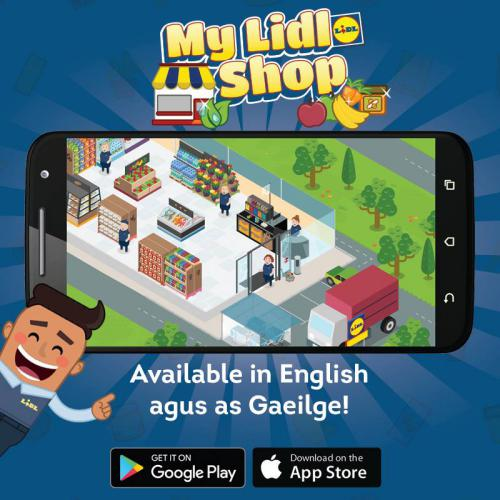
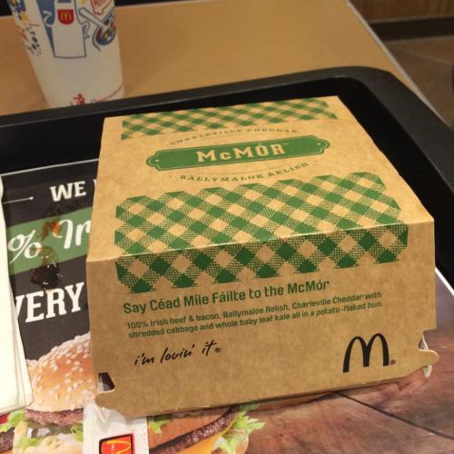

We have provided much information here to offer you advice. Click on the segments below to open and close them.
Gaeilge (Irish) is the first official language of Ireland. Its use is determined by the Official Languages Act 2003. Many people in Ireland have a knowledge of Irish ranging from a smathering to fluent. More and more activities are happening in Irish. More Gaelscoileanna continue to open, more books are being published in Irish than ever before, more texts are being translated into Irish than ever before, and more consumers products are being made available in the Irish language.
Irish has been, since 2007, one of the 24 official languages of the European Union. Irish is regularly spoken in the European Parliament and there are teams of Irish translators working for the EU institutions in Brussels and Luxembourg.
According to the 2016 census figures, 1 out of 3 people can speak Irish. This is 1.6 million people in a population of close to five million people (Republic of Ireland figures only). This means more people can speak Irish than Estonian or Maltese, fellow EU languages.
72,000 people speak Irish every day outside of the eductation system - that is the same size as the population of Limerick city and its surroundings, or to put it another way, the same amount of people who speak Faroese.
There are Gaeilscoileanna (Irish medium schools) in all 32 counties of Ireland. One out of every 12 school pupils are being educated in Irish.
There are many third level courses available in Irish such as Fiontar in DCU, translation, media, and technology courses.
Irish is the language that is used to give ALL formal commands in the Irish Defence Forces.
Irish has been used in space going back as far as the Apollo 11 moon landing in 1969. Messages in Irish were included in various space missions. Astronaut Chris Hadfield published messages in Irish on Twitter when he was stationed in the International Space Station.
Many businesses have used Irish over the years and it is an increasing trend. All sorts and sizes of businesses have used Irish including major international corporations, e.g. Microsoft, Google, Tesco, to small Irish businesses such as Lilly's Eco Clean. All types of businesses have used Irish from doctors, solicitors, hotels, pubs, restaurants, bookshops to webdesigners, landscapers, film makers etc.
Many many companies use the Irish language. Some are household names.
In the technology and web sectors, Google, Facebook, Twitter, Samsung, and Microsoft offer products and services in Irish.
In retailing, companies such as Tesco (the third largest supermarket company in the world), SuperValu, Lidl, Dunnes Stores, WHSmith, etc. use the Irish language.
The world famous McDonalds fast food restaurant uses Irish in its restaurants and on its packaging.
Other well-known companies and brands that use the Irish language include Airbnb, Supermacs, Kitkat, Guinness, Carlsberg, Bank of Ireland, AIB, Sudocrem, Iarnród Éireann, the ESB, Habitat, Woodies DIY, Eurospar, etc.
Your business can do it too!!
As you are probably aware, parents love to spend money buying things for their children such as clothes, shoes, books, toys, games, furniture, computers etc. If you provide products and services in the Irish language for children, you will definitely attract parents who are keen to get the best for their children.
When consumers choose products and services in the Irish language, it is of huge benefit to the Irish economy. As Ireland is the only country in the world where Irish is spoken and used, anytime a product or service in Irish is bought or used, it creates economic activity that cannot be done anywhere else in the world. Even if an Irish-language product is produced somewhere else, such as in China, an Irish speaker would have to have been part of the production process. This means that Irish people are being valued for their language knowledge that no-one in any other country can provide.
In order to provide a product or service to Irish-speaking consumers, you need only ask yourself what do you normally provide customers. Keep it customer focused. You only have to provide all that is necessary for the customers and nothing else.
There is no point publishing an annual report or internal safety manual etc. in Irish if these are irrelevant to the Irish-speaking consumer. Irish-speaking customers need Irish versions of signs, websites, application forms, brochures, letters, toys, books, statements, telephone service in Irish etc.
If you are able to provide a product and/or service in Irish - let people know about it!! There is no point going to the effort to translate material etc. and then not let Irish-speaking consumers know they have the option to do business with you in Irish. Advertise the fact that you can do business with people in Irish. Make sure the option to use Irish is prominently displayed in your office or premesis, on your website, promotional material etc. If Irish speakers know that there is someone who can speak Irish working in a particular business, they are more likely to go to that business, to spend more time there, and to spend more money there – all due to being able to talk with someone in Irish.
If you decide to use Irish in your business, make it a permanent feature of your business. For example, if you put up signs in Irish inside and outside your premesis or if you provide information in Irish on your website, please leave the signs or information in Irish there permanently. It is very frustrating for Irish speakers if they become used to seeing Irish in your business and then one day finding that the Irish information, signs, products, etc. have been removed.
Did you know that if you broadcast an ad entirely in Irish on RTÉ, your company will get a reduction of 30%? Your advertisement will get the message across for much less than it would cost to do it in English alone.
This is all about language preference, not language competence. Undoubtedly, Irish speakers will be able to speak English, as can many other nationalities, but our preference is for products and service in the Irish language. Ask non-Irish customers would they like a service or product in their language and you can be assured that they would like that even though they may be able to speak English. Their preference is for their own language, not other languages that they may speak.
You can start off using as much as or as little as you like. You could begin with a little and then over time offer more and more products and service in Irish. It is entirely up to you, but avoid making it look like a token effort as Irish-speaking consumers will not be interested in that.
You can still provide products or service in Irish. Even if you do not speak Irish, you can employ someone to deal with your Irish-speaking customers. If this is not an option, you can get material translated and provide Irish versions of materials such as websites, literature, application forms, menus, etc. This may be enough to satisfy Irish-speaking customers.
You can still profit from the Irish language, even if, for whatever reason, you do not like Irish. If you provide products or services in Irish, you can attract Irish speakers to your company notwithstanding the fact that you do not like the Irish language.
There are limitless ways you can provide products and/or service in Irish e.g. Irish signage, Irish advertisements, Irish messages on staff uniforms, Irish version of websites, literature in Irish, receipts in Irish, Irish service on the telephone. Ask us in the Cumann and we will be glad to advice you how to use Irish with your customers.
No, you do not have to change your entire operation to an Irish-speaking business in order to serve Irish-speaking customers. You only need to be able to provide all that is necessary to offer your product or service in Irish.
Irish is hundreds of years older than English and many other languages, so it has a very well developed vocabulary. An Coiste Téarmaíochta (the Terminology Committee) has been determining terms for all sorts of items for decades, so there is no fear that you will be unable to do business in Irish.
There is no type of activity that Irish cannot be used for. Let us know what your business is and we will advice you how best to use Irish to provide a product or service to Irish-speaking customers.
This should not be a problem if the use of Irish in your business is done properly and sensibly. In the unlikely event that a customer becomes annoyed or stops doing business with you due to your option of providing products or service in Irish, it says more about the customer than your business. You will have many happy and loyal customers who will continue to do business with you due to the fact that you provide a product or service in Irish.
Have no fear! You can contact the Cumann and we will be able to help you. Foras na Gaeilge have a Business Services section to assist businesses with using Irish. Údarás na Gaeltachta have a formidable business division well experienced with dealing with businesses, large and small, from Ireland and abroad.
That depends on how you decide to use Irish in your business. There will be some initial set up costs but you should recoup your costs after a while. Erecting Irish-language signs in your premises should not cost too much. Using the world wide web will keep costs down. Allowing customers to be able do their business on an Irish website and/or being able to download documents in Irish will keep costs down.
There is financial assistance available for bilingual signage and material from Foras na Gaeilge.
If you provide products and services in Irish, please let us know about it so that we can inform our members that they should buy your prodcuts or services.